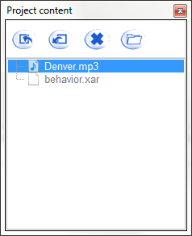
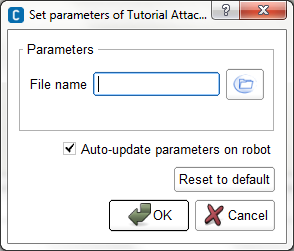
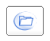

Attached files¶
 Cannot be tested on a simulated robot.
Cannot be tested on a simulated robot.
In this tutorial you will see, over an example, how to:
- Attach a file to a behavior,
- Declare it as a parameter of a box, and
- Use it in the box script.
Create the following box: a Script box playing a music from a MP3 file.
Attaching a file to a Behavior¶
| Step | Action | Further help |
|---|---|---|
| Display the Project content panel. | How to display/hide panels | |
| In the Projet content panel, click on the Import file button. | ||
Select the file to attach to the behavior. The file is displayed in the project content, and will be sent on the robot with the behavior.  |
Declaring the attached file as parameter of a box¶
Now we are going to create a simple box that will play a music in order to use an attached file as parameter.
| Step | Action | Further help |
|---|---|---|
| Create a new Script box in your Flow diagram. | How to create a Script box | |
| Add a parameter to the box, and specify “File name” as Name, and “Attached file” as Type. | How to add/remove inputs, outputs, parameters in a box | |
Click the Parameter button, to set the value of the parameter.  |
||
Click the  browse button and select one of the files available in the Project content. Note that if you had not yet imported the file in the Project content, you can do it prior to select the file. |
Using a file in the box script¶
Now we will edit the script of the box in order to read the music.
| Step | Action | Further help |
|---|---|---|
Double click the box to display the Script editor panel. As you can see, the structure of the code were automatically generated. |
Script editor panel | |
In the onLoad method, create a proxy to AlAudioPlayer module. def onLoad(self):
self.player = ALProxy('ALAudioPlayer')
|
ALAudioPlayer | |
In the onStart method, call the method playFile() with the path to the attached file as parameter. The attached file will be send to the robot when you will start the behavior, so the path has to lead to the attached file on the robot. ALFrameManager.getBehaviorPath(self.behaviorId) + self.getParameter("File name")
It is a concatenation of the behavior path on the robot and the file name. |
||
In the onUnload method, call the method stopAll(). The code of the box should look like that: class MyClass(GeneratedClass):
def __init__(self):
GeneratedClass.__init__(self)
def onLoad(self):
self.player = ALProxy('ALAudioPlayer')
def onUnload(self):
self.player.stopAll()
def onInput_onStart(self):
self.player.playFile(ALFrameManager.getBehaviorPath(self.behaviorId) + self.getParameter("File name"))
def onInput_onStop(self):
self.onUnload()
|
Now, let’s test it:
| Step | Action | Further help |
|---|---|---|
| In your root diagram, link the onStart input of the box to the beginning of the behavior. | ||
Click the Play button to start the behavior. Your robot is playing the music given as an attached file. |